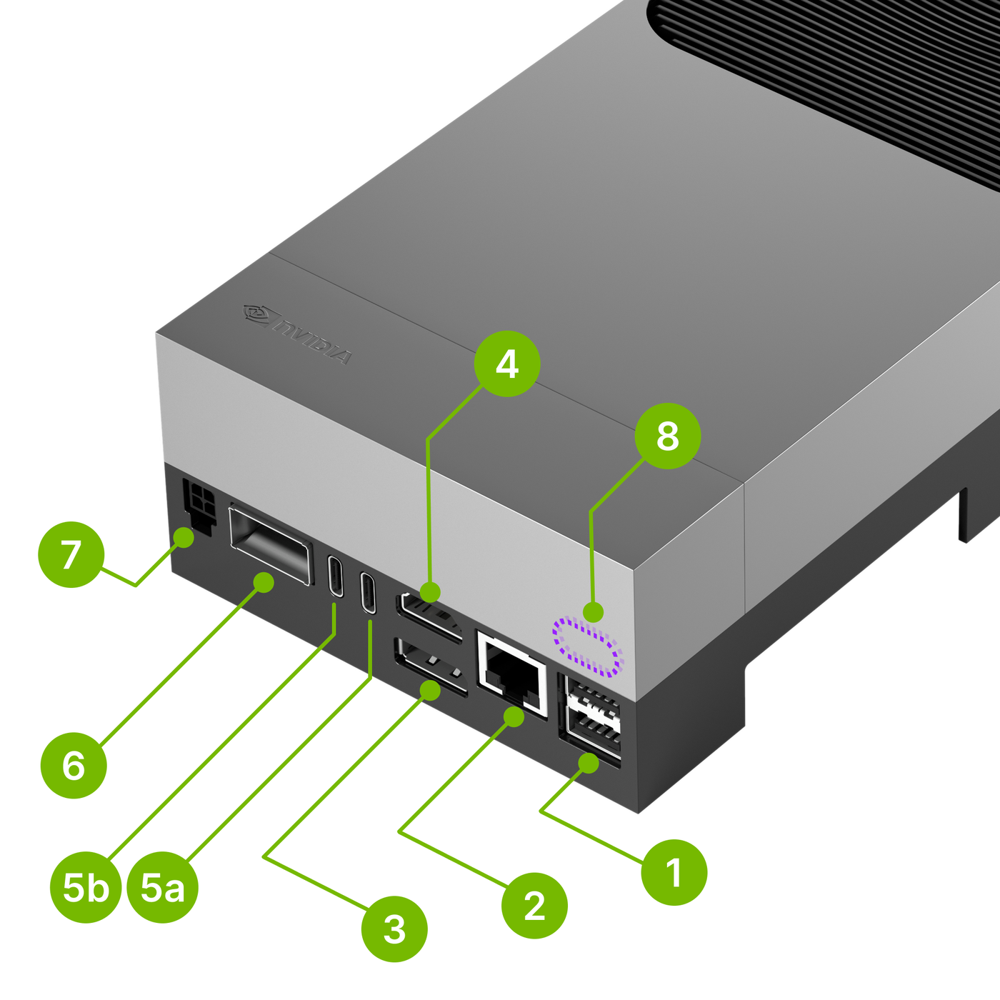
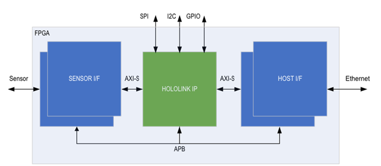
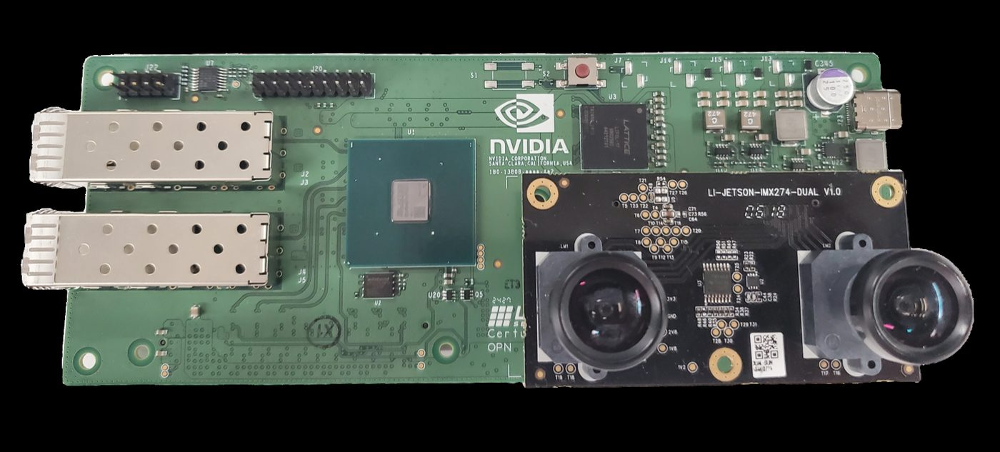
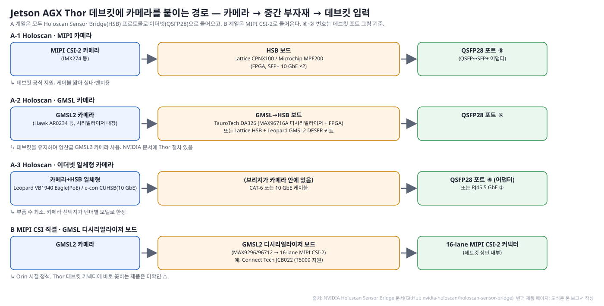
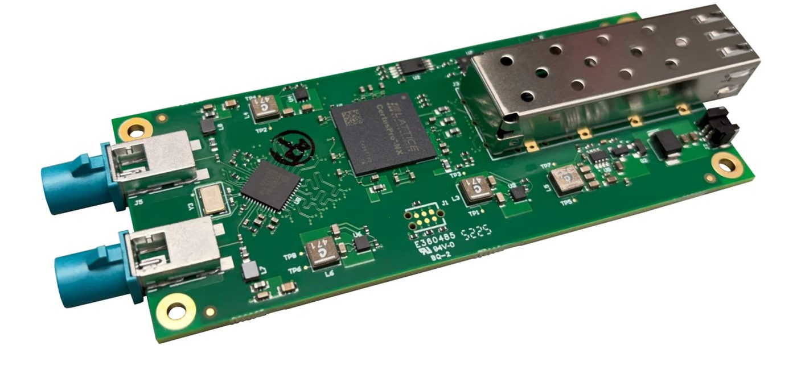
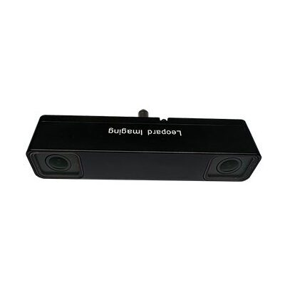
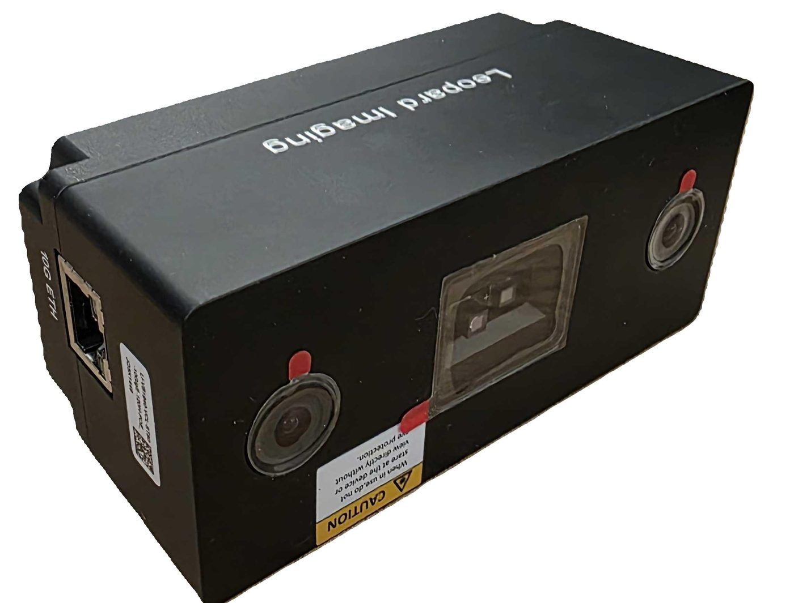

Jetson AGX Thor로 자율주행 연구하기 — 데브킷 사양, 연구 사례와 부자재, 카메라 연결 방법
작성일: 2026-10-15 · 상태: 초판 · 16번 주제의 후속편(Jetson AGX Thor 전용) 전제: Jetson AGX Thor Developer Kit(T5000)을 구매해 자율주행 연구에 쓴다. 로봇·산업 장비 사례는 다루지 않는다. 표기: 🔍 공식(NVIDIA·벤더 문서) / 📄 논문 / 📰 언론·2차 / 💬 포럼 / 🏷️ 벤더·리셀러 제품 페이지 / ⚠️ 미확인·충돌. 출처 ID는 reference/references.md. 저장소 기존 문서는 참고하지 않았다. 조사 환경 제약으로 GitHub·raw 외 페이지는 검색 발췌로 확인했으며, 그림은 Apache-2.0 공개 저장소(NVIDIA Holoscan Sensor Bridge 문서)에서 가져오거나 직접 그렸다.
요약
- 데브킷은 128 GB 메모리와 FP4/FP8이 강점이지만 메모리 대역폭(~270 GB/s)이 병목이다. VLA·LLM류는 Thor에서도 메모리 바운드이며, INT8은 FP16보다 느릴 수 있다 [T9+][T7+].
- 주행 VLA(Alpamayo 10B)는 Thor에서 아직 실시간이 아니다. FlashDrive 최적화 후에도 약 0.94 s/윈도우(≈1 Hz)로, 워크스테이션 GPU(151 ms)보다 6배 느리다 [T8++]. 소형 VLA(π0 2.7B)는 분석 모델 기준 52.6 ms(19 Hz)로 실시간 가능 [T9+].
- 데브킷에는 GMSL2 커넥터도, 카메라용 CSI 커넥터도 없다. 카메라는 QSFP28 포트로 들어오는 Holoscan Sensor Bridge(HSB) 가 NVIDIA의 공식 경로이고, GMSL2 카메라를 쓰려면 HSB 앞단에 디시리얼라이저(TauroTech DA326, Leopard 키트)를 두면 된다. GMSL2를 바로 꽂는 보드(8채널)는 서드파티 캐리어·박스다 [T23+][T26++][T19++][T18++].
- 차량 산업의 Thor는 Jetson이 아니라 DRIVE AGX Thor(GMSL2 16채널 내장, DriveOS)다. Jetson AGX Thor를 실제 도로 차량에 올린 공개 논문은 아직 없고, Thor 기반 "GMSL2 8채널 + CAN FD 박스" 제품군이 차량용 진입점이다 [T33++][T18++][T21+++].
1. Jetson AGX Thor 데브킷 사양 요약
1-1. 컴퓨트·메모리
| 항목 | 사양 | 출처 |
|---|---|---|
| 모듈 | Jetson T5000: Blackwell GPU 2,560 CUDA / 96 Tensor 코어, 14× Arm Neoverse-V3AE | T1++ 🔍 |
| AI 연산 | 최대 2,070 FP4 TFLOPS(희소). 논문 기준 FP16 400 TFLOPS, INT8 800 TOPS | T1++ T9+ 🔍📄 |
| 메모리 | 128 GB LPDDR5X, 273 GB/s | T1++ T11+ 🔍📄 |
| 전력 | 40–130 W 설정 가능 | T1++ 🔍 |
| 정밀도 특성 | Blackwell은 FP8/NVFP4에 최적화. INT8은 FP16 대비 이득 없음 또는 역전(MiDaS FP16 5.8 ms vs INT8 10.3 ms) | T7+ 💬 |
1-2. 입출력 (카메라·네트워크·CAN·전원)

그림 1. Jetson AGX Thor 데브킷 포트. ① USB 3.2 ×2 ② RJ45 5 GbE ③ DP/HDMI ④ HDMI ⑤a/b USB-C ⑥ QSFP28(4×25 GbE, HSB 카메라 입력) ⑦ Micro-Fit DC ⑧ 전원 버튼. 출처: NVIDIA Holoscan Sensor Bridge 문서 [T26++].| 항목 | 사양 | 비고 | 출처 |
|---|---|---|---|
| 카메라 입력 | QSFP28 ⑥ → Holoscan Sensor Bridge 카메라(최대 20대) | 데브킷의 유일한 고속 카메라 입력 | T1++ T26++ 🔍 |
| MIPI CSI-2 | 모듈은 16레인(최대 6카메라)을 갖지만 데브킷 캐리어에는 CSI 커넥터가 없다(Stereolabs 지원문서). 제품 페이지의 "CSI 6대"는 모듈 사양 | 캐리어 교체 시에만 사용 ⚠️ | T1++ T23+ 🔍🏷️ |
| 네트워크 | QSFP28 4×25 GbE(⑥), RJ45 5 GbE(②), Wi-Fi 6E(M.2 E) | LiDAR·GNSS는 RJ45 또는 QSFP 브레이크아웃 | T1++ 🔍 |
| 저장·확장 | M.2 M(NVMe 1 TB 동봉), M.2 E. M.2 B-key(LTE/5G) 없음 | 5G는 캐리어 필요 | T1++ 🔍 |
| CAN | 2×13 헤더(J47)에 CAN 컨트롤러 2채널, CAN FD. 외부 트랜시버(SN65HVD230 등) 필요 | 125k–1 Mbps | T2 T24+ 🔍 |
| 전원 | 240 W USB-C PD(Delta ADP-240LB) 동봉. 대체 PSU는 28 V 5 A 연속·7.5 A 피크. 차량 12 V→28 V PD 어댑터는 확인된 제품 없음 ⚠️ | — | T3 💬 |
| 기구 | 마운트 홀 없음. 커뮤니티 STL 인클로저 | — | T32++ 💬 |
1-3. 소프트웨어·가격
- JetPack 7.0(CUDA 13, TensorRT 10.13, HSB 통합) → 7.1(TensorRT-Edge-LLM, Thor HSB 정식) → 7.2(CUDA 13.2, TRT 10.16, MIG 프리뷰, SIPL 카메라 프레임워크) [T4++][T31+] 🔍.
- ROS 2 Jazzy(Isaac ROS 4.x), Holoscan SDK 4.x [T4++] 🔍.
- 가격 US$3,499(2025-08) → US$5,499(2026-07). T4000 모듈(64 GB, 1,200 TFLOPS) US$1,999 [T5+][T6+] 📰.
- 주의: DRIVE AGX Thor와 별개 제품(DriveOS·CUDA 버전·GMSL 내장 여부·구매 경로가 다름) [T36+] 💬.
2. 연구 사례와 부자재
2-1. 주행 VLA 추론 — Thor에서 얼마나 빠른가
FlashDrive (Z Lab, arXiv 2608.12932, 2026-08) [T8++] 📄 - 대상: 주행 VLA Alpamayo 1.5-10B / 1-10B (카메라 4대 × 4프레임 입력) - 방법: KV 캐시 윈도우 재사용 · 블록 디퓨전 투기 추론(DFlash) · W4A8 양자화 · 디노이징 스텝 재사용 · CUDA Graph - 결과: RTX PRO 6000 717→151 ms(4.7×) · Jetson Thor 3,770→944 ms(4.0×) ⚠️발췌 - 시사점: 10B 추론형 VLA는 Thor에서 최적화 후에도 약 1 Hz. 실차 10 Hz에는 더 작은 모델이 필요 - 부자재: 없음(오프라인 클립 재생)
TensorRT-Edge-LLM Alpamayo 예제 (NVIDIA) [T13++] 🔍 - NVIDIA 공식 엣지 런타임의 VLA 예제. FP16 내보내기만 지원, Thor에서 엔진 빌드 - Thor 지연 수치는 문서에 없음 ⚠️. 포럼에 FP16 엔진 15.17 GB 할당 실패(OOM) 보고 💬 - 후속 논문(미열람): Alpamayo 지연 분석(arXiv 2605.08975), 메모리 스와핑 OOM 회피(arXiv 2605.11678) [T16+]
2-2. Thor 하드웨어 특성 — 왜 메모리가 병목인가
VLA-Perf (NVlabs, arXiv 2602.18397, 2026-02) [T9+] 📄 ✅ - 방법: 연산량 + 메모리 접근량을 함께 보는 루프라인 분석 모델(측정이 아닌 예측) - 결과(논문 표 원본): π0(2.7B) E2E Thor 52.6 ms(19 Hz) · Orin 64 GB 93.8 ms(10.7 Hz) · RTX 4090 31.1 ms - Thor는 비전 인코더·VLM·액션 전문가 세 단계 모두 메모리 바운드(다른 GPU는 비전·VLM이 연산 바운드) - 검증: RTX 4090 실측 대비 예측 정확도 73–83%(실제가 더 느림) - 시사점: Thor에서는 연산량보다 바이트 수(양자화·KV 캐시 재사용) 를 줄여야 빨라진다
Characterizing VLA: Action Generation Bottleneck (Google/Purdue, arXiv 2603.02271) [T10] 📄 - 7B급 VLA를 Orin 64 GB vs Thor 128 GB에서 단계별 프로파일링 - E2E 지연의 최대 75%가 메모리 바운드 액션 생성 단계 - Thor는 Orin 대비 연산 5배지만 E2E는 1.4배만 개선(절대 ms 미공개 ⚠️)
Characterizing VLA across XPUs (SJTU, arXiv 2604.24447, ICML 2026) [T11+] 📄 - π0을 RTX 4090·Orin·Thor·NPU에서 Nsight 트레이스 + 루프라인 분석 - 공통 패턴: 연산 바운드 VLM 백본(SM >90%) → 메모리 바운드 액션 전문가(SM 20–40%) - DP-Cache(디퓨전 중복 제거)로 102→79 ms(1.29×), 성공률 유지
GTR 밀집 예측 백본 (arXiv 2609.26590, DRIVE AGX Thor) [T14] 📄 - 세그멘테이션·깊이 백본을 같은 Thor SoC에서 루프라인 분석 → 대역폭 지붕 근처(메모리 바운드) - 커널 융합으로 중간 메모리 트래픽 제거, DRAM 지붕 대비 89–141% 효율(태스크별 ms 미확인 ⚠️)
Thor 양자화 주의 [T7+] 💬 - Thor에서 INT8이 FP16보다 느린 사례 다수(MiDaS FP16 5.8 ms vs INT8 10.3 ms, RT-DETR) - Orin용 INT8 엔진을 그대로 옮기면 손해. FP8/FP4로 다시 양자화
2-3. 멀티카메라 BEV 처리 — RidgeRun 벤치 [T12+] 🏷️
- 내용: GStreamer 서라운드 뷰(BEV) 스티칭을 Thor·Orin·Orin NX에서 측정(4·6 입력, HD~4K)
- Thor 출력 FPS: HD 4입력 ≈328 · HD 6입력 ≈212 · 4K 4입력 ≈91.5 · 4K 6입력 ≈65.6
- Thor 처리 지연(jetson_clocks on/off): 1080p 4입력 5.9/10.4 ms · 4K 6입력 28.1/37.2 ms
- 시사점: 차량 서라운드 뷰급(6카메라 1080p)은 10 ms 안쪽이라 BEV 인식 앞단에 여유. Orin 수치·카메라 모델은 미확인 ⚠️
2-4. 부자재가 드러난 사례 (차량·플랫폼)
| 사례 | 누가·언제 | 무엇을 | 함께 쓴 부자재 | 출처 |
|---|---|---|---|---|
| 텔레리안 AVS300(한국) | 2026-05 보도 | Jetson AGX Thor 러기드 엣지 AI 플랫폼, HSB 기반 저지연 센서 통합 플랫폼 개발 | GMSL2 8채널 직결(데브킷 미지원 기능), 프레임 싱크·PPS 하드웨어 시간동기 → 스테레오·3D 매핑·LiDAR-카메라 융합. 카메라·LiDAR 모델 미기재 | T17 📰 |
| Advantech × SENSING | 2025-12 | Thor 박스 MIC-742-AT에 GMSL 카메라 통합(SerDes·디바이스 트리·BSP 검증) | SENSING GMSL2 카메라, 박스에 8× GMSL2 + 4× CAN FD | T18++ 🔍 |
| Leopard Imaging | 2025-11 / 2026-07 | 데브킷용 GMSL2 디시리얼라이저 키트와 Thor 박스 | LI-GMSL2-DESER-HOLOSCAN(MAX9296, FAKRA 1채널, US$388), LI-THOR-BOX-GM2B(8× GMSL2, US$8,500); 카메라 LI-VENUS-ISX031·LI-IMX728·AR0234 스테레오 | T19++ 🏷️ |
| Connect Tech | 2025-08 | T5000 캐리어 Gauntlet + 카메라 브레이크아웃 | GMSL3/GMSL2/FPD-Link III/SDI 브레이크아웃, 4× CAN 2.0b; JCB022(MAX9296A ×4, 8× GMSL2, Orin·Thor T5000) | T20+++ 🏷️📰 |
| Seeed / Forecr / Firefly / Syslogic | 2025–26 | Thor 캐리어·박스 | J601: 8× GMSL2·CAN FD·M.2 B(5G)·19–48 V / DSBOX-THRMAX: 최대 8× GMSL2 / EC-ThorT5000: 8× GMSL2·CAN / RML A5AGX: 러기드, 멀티카메라+LiDAR 융합 | T21+++ 🏷️📰 |
| e-con Systems | 2025-08 | Thor용 카메라 라인업(USB·GigE·10G Holoscan) | e-CAM85_CUHSB(IMX715, US$469) 등 10G Holoscan 카메라, ISX031 HDR·IMX900 GS·AR0234 | T22++ 🏷️ |
| Ouster | 2026-05 | REV8 LiDAR 드라이버를 Orin·Thor에 최적화 | 이더넷 LiDAR(REV8) | T25 🔍 |
| Stereolabs | 2025–26 | ZED 카메라 Thor 지원 | 데브킷은 USB3 ZED만(CSI 포트 없음), GMSL2(ZED Link)는 파트너 캐리어 필요 | T23+ 🏷️ |
- 실제 도로 차량에 Jetson AGX Thor를 올려 카메라·LiDAR·CAN·전원을 모두 공개한 사례: 없음 ⚠️ (Autoware·TIER IV·대학 레이싱팀도 언급 없음)
- 부자재 패턴: 차량용은 GMSL2 8채널 + CAN FD + 넓은 DC 입력 캐리어/박스, 데브킷은 HSB로 카메라를 받는 벤치·검증 단계용
3. 데브킷에 카메라 붙이는 방법
3-1. Holoscan Sensor Bridge(HSB)란
- 무엇: NVIDIA가 만든 오픈소스(Apache-2.0) "센서 → GPU 이더넷 브리지" [T26++] 🔍 ✅
- FPGA가 센서(MIPI 카메라 등) 데이터를 받아 UDP/이더넷 패킷으로 전송
- 호스트 NIC가 CPU를 거치지 않고 GPU 메모리에 직접 기록
- FPGA IP 소스 + 호스트 소프트웨어(Holoscan 오퍼레이터)를 NVIDIA가 공개
- 왜 이더넷인가
- MIPI/GMSL은 짧은 배선·전용 디시리얼라이저가 필요, 이더넷은 긴 케이블·스위치·PTP 시간동기 가능
- NVIDIA 공식 수치: 4K60 glass-to-glass 17 ms, Thor CoE 사용 시 CPU 점유 ≈1%, PTP 동기 1 µs 이내 [T27+] 🔍
- Thor에서의 동작
- 데브킷 QSFP28(MGBE)에 연결 → JetPack 7.1부터 CoE(Camera over Ethernet) 하드웨어 가속(SIPL/FuSa API)
- JetPack 7.0은 CoE 카메라만, 7.2에서 정식 지원 + ISP 경로 [T31+] 🔍
- 보드 제조사
- 레퍼런스: Lattice CertusPro-NX(IMX274, SFP+ ×2), Microchip PolarFire MPF200(IMX477)
- 상용: e-con·Advantech·SENSING·TauroTech·Leopard [T26++][T28++][T29++] 🔍🏷️

그림 2. HSB IP 구조 — 센서 인터페이스(MIPI)에서 받은 스트림을 FPGA가 UDP로 캡슐화해 이더넷으로 송출. 출처: NVIDIA HSB 문서 [T26++].
그림 3. Lattice CertusPro-NX HSB 레퍼런스 보드에 IMX274 듀얼 카메라를 장착한 모습(SFP+ 10 GbE 2포트, USB-C 전원). 출처: NVIDIA HSB 문서 [T26++].3-2. 경로 한눈에 보기 — 카메라 → 중간 부자재 → 데브킷 입력

그림 4. 데브킷 기준 카메라 연결 경로. A 계열은 모두 HSB(이더넷), B는 MIPI CSI(데브킷에는 커넥터 없음). 본 보고서 작성.| 경로 | 카메라 | → 중간 부자재 | → 데브킷 입력 | 특징·확인 상태 | 출처 |
|---|---|---|---|---|---|
| A-1 HSB + MIPI 카메라 | MIPI CSI-2 모듈(IMX274, IMX477) | Lattice CPNX100(US$350) 또는 Microchip MPF200 HSB 보드 | QSFP28 ⑥(QSFP↔SFP+ 어댑터) | NVIDIA 문서의 데브킷 공식 절차. 케이블이 짧아 벤치·실내용 | T26++ T28++ T29++ |
| A-2 HSB + GMSL2 카메라 | GMSL2 카메라(Hawk AR0234 스테레오, ISX031, IMX728 등; 시리얼라이저 내장, 동축 10 m급) | TauroTech DA326(MAX96716A 디시리얼라이저 + FPGA, NVIDIA 문서에 Thor 절차 있음) 또는 Lattice HSB + Leopard GMSL2 DESER 키트(MAX9296, 1채널, US$388) | QSFP28 ⑥ | 데브킷을 유지하며 양산급 GMSL2를 쓰는 길. 키트당 채널이 적어 4대 이상이면 보드가 늘어남 | T26++ T19++ |
| A-3 HSB 일체형 이더넷 카메라 | 카메라 안에 브리지가 든 제품: Leopard VB1940 Eagle(PoE, NVIDIA 레퍼런스), e-con CUHSB(10 GbE, 자체 ISP) | 케이블만(CAT-6 또는 10 GbE) | QSFP28 ⑥(어댑터) 또는 RJ45 ② | 부품 수 최소. 카메라가 벤더 모델로 한정 | T26++ T22++ |
| B MIPI CSI 직결 | GMSL2 카메라 | GMSL2 디시리얼라이저 보드(MAX9296/96712 → CSI; Connect Tech JCB022, NVIDIA 레퍼런스 IMX390+MAX9296) | 모듈 16레인 CSI — 데브킷 캐리어에는 커넥터 없음 | Orin 시절 정석이지만 데브킷에서는 불가, 서드파티 캐리어(Gauntlet·J601 등)에서만 가능 ⚠️ | T23+ T24+ T20+++ |

그림 5. A-2 경로의 핵심 부품 — TauroTech DA326. 왼쪽 FAKRA 커넥터 2개로 GMSL 카메라를 받고(MAX96716A 디시리얼라이저), Lattice CertusPro-NX FPGA가 오른쪽 SFP+로 송출. 출처: NVIDIA HSB 문서 [T26++].

그림 6(좌). DA326용 Hawk 모듈 — AR0234 센서 2개 + MAX9295D 시리얼라이저. 그림 7(우). A-3 경로의 Leopard VB1940 Eagle — 브리지 내장 PoE 카메라, CAT-6 한 가닥으로 데브킷에 연결. 출처: NVIDIA HSB 문서 [T26++].3-3. HSB와 GMSL — 특성과 추세
| 구분 | GMSL2 (Orin 세계의 정석) | Holoscan Sensor Bridge (Thor의 공식 경로) |
|---|---|---|
| 물리 계층 | 동축/STP 한 가닥, 전원 동시 공급(PoC), 10 m급 | 이더넷 10/25 GbE(SFP+/QSFP), PTP 시간동기 |
| 보드 쪽 요구 | 디시리얼라이저(MAX9296/96712) + CSI 커넥터 → 캐리어가 필요 | FPGA 브리지 보드(또는 일체형 카메라) + QSFP 포트 → 데브킷 그대로 |
| 데이터 경로 | CSI → ISP(Argus/SIPL) | UDP → NIC → GPU 메모리(Thor는 CoE 가속, CPU ≈1%) |
| 생태계 | 양산 차량 카메라 대부분이 GMSL2. 벤더·모델 선택 폭이 가장 넓음 | 2025–26에 급성장: e-con 10G 카메라(2025-05 시연), Leopard GMSL2 DESER 키트(2025-11), Advantech MIC-FG-HSB, Microchip Rev 2.0(2026-08), 텔레리안 HSB 플랫폼(2026-05) |
| 지연 | 짧음(보드 내부) | NVIDIA 17 ms glass-to-glass; Lattice 블로그 실측 Thor ≈40 ms vs Orin ≈60 ms(1080p@142fps) |
| 출처 | T24+ T23+ | T26++ T27+ T30+ T19++ T29++ |
- 추세
- Orin까지: "캐리어 + GMSL2"가 표준
- Thor부터: NVIDIA가 데브킷 카메라 입력을 HSB로 통일
- 양산 카메라는 여전히 GMSL2 → 벤더는 GMSL2→HSB 변환 보드(DA326·Leopard 키트·Advantech MIC-FG-HSB)와 GMSL2 내장 Thor 캐리어 두 갈래로 대응 [T19++][T30+][T18++] 🏷️
- 연구용 권장
- 벤치: A-2(DA326 또는 Lattice + Leopard 키트)로 GMSL2 카메라 2~4대
- 카메라 6대 이상·차량 탑재: GMSL2 8채널 캐리어(Seeed J601·Connect Tech·Advantech)로 이전
3-4. 카메라 외 부자재 체크리스트 (데브킷 기준)
| 항목 | 구성 | 비고 | 출처 |
|---|---|---|---|
| CAN | J47 헤더 + CAN 트랜시버 보드(SN65HVD230) | CAN FD 지원, 종단 점퍼 | T2 🔍 |
| LiDAR | 이더넷 LiDAR(Ouster REV8 등) → RJ45 5 GbE 또는 QSFP 브레이크아웃 | Thor 드라이버 튜닝 발표 있음 | T25 🔍 |
| 5G/LTE | 데브킷 B-key 없음 → USB 모뎀 또는 B-key 있는 캐리어(J601) | JetPack 7 검증 미확인 ⚠️ | T21+++ T32++ 🏷️ |
| 전원 | 벤치: 동봉 240 W PD. 차량: 12 V→28 V/5 A PD 어댑터 미확인 → 캐리어 DC 직입력(19–48 V) 권장 ⚠️ | — | T3 T21+++ 💬🏷️ |
| 기구·냉각 | 마운트 홀 없음, 커뮤니티 STL, 캐리어 전용 히트싱크·팬 | — | T32++ 💬 |
4. 참고 — 차량 산업의 Thor: DRIVE AGX Thor
- 완성차·L4는 DRIVE AGX Thor를 쓴다 [T33++][T34+++] 📰🔍
- TIER IV × Isuzu L4 버스(DRIVE AGX Thor + Hyperion 센서)
- Li Auto i8(Thor-U 700 TOPS로 VLA), Zeekr 9X(Thor-U)
- NVIDIA Hyperion 10: DRIVE AGX Thor 2개, 카메라 14·레이더 9·LiDAR 1
- DRIVE AGX Thor DevKit [T33++] 🔍
- 64 GB, 16× GMSL2 + 2× GMSL3 내장, 자동차 이더넷(100M/1G/10G), 350 W
- SKU 10(벤치) / SKU 12(차량 탑재), DriveOS 7, ASIL-D
- 가격 비공개, NVIDIA DRIVE 개발자 프로그램 승인 필요
- Jetson AGX Thor와의 차이 [T36+] 💬
- 메모리 128 vs 64 GB · 카메라 HSB vs GMSL 내장 · SW JetPack/CUDA 13 vs DriveOS · 구매 경로
- 같은 Thor 실리콘 → 모델·양자화·지연 결과는 이전 가능, 카메라 배선은 재설계
- Autoware 레퍼런스 HW에 Jetson T5000 기반 MIIVII APEX THOR(128 GB, GMSL, CAN, 9–36 V) 등재 → Jetson Thor로 Autoware 차량 컴퓨터를 꾸미는 길도 열려 있음 [T35] 🔍
미확인·주의
- FlashDrive의 Thor 수치(3,770→944 ms)는 프로젝트 페이지 발췌이고 논문 표 원문은 열람하지 못했다 ⚠️. VLA-Perf의 Thor 수치는 측정이 아니라 분석 모델 예측이며 실측은 더 느리다(4090에서 예측의 73–83%).
- 데브킷 CSI 커넥터 유무는 NVIDIA 제품 페이지("CSI 6대")와 Stereolabs 문서("캐리어에 CSI 없음")가 충돌한다 ⚠️. 모듈 사양과 데브킷 캐리어 사양의 차이로 해석했다.
- Leopard·Microchip의 Thor 지원은 벤더 표기가 "설계상 호환"·"드라이버 보장 없음"인 항목이 있어 구매 전 확인이 필요하다 ⚠️ [T29++].
- 가격은 2025–26에 크게 변동했다(데브킷 +57%).
출처 목록
ID를 클릭하면 새 탭에서 원문이 열립니다. 본문의 ID 링크도 같은 원문으로 연결됩니다.
| ID | 제목 | URL | 날짜 | 등급 |
|---|---|---|---|---|
| T1 | NVIDIA: Introducing Jetson Thor (개발자 블로그) · Jetson Thor 제품 페이지 · AGX Thor Developer Kit User Guide — Hardware Layout | developer.nvidia.com/blog/introducing-nvidia-jetson-thor-the-ultimate-… · www.nvidia.com/en-us/autonomous-machines/embedded-systems/jetson-thor/… · docs.nvidia.com/jetson/agx-thor-devkit/user-guide/latest/hardware_layo… | 2025-08 | 🔍 |
| T2 | NVIDIA Jetson Linux r39.2: Controller Area Network (CAN) — J47 헤더, 외부 트랜시버 | docs.nvidia.com/jetson/archives/r39.2/DeveloperGuide/HR/ControllerArea… | 2026 | 🔍 |
| T3 | NVIDIA 포럼(공식 갱신 2026-07-02): Jetson Thor Developer Kit USB-C Power Supply (240 W, 28 V 5 A) | forums.developer.nvidia.com/t/updated-7-2-2026-nvidia-jetson-thor-deve… | 2026-07 | 💬 |
| T4 | JetPack 7.2 아카이브 · JetPack 7.2 발표(포럼) · JetPack 7.1 아카이브 | developer.nvidia.com/embedded/jetpack/downloads/archive-7.2 · forums.developer.nvidia.com/t/jetpack-7-2-jetson-software-goes-agentic… · developer.nvidia.com/embedded/jetpack/downloads/archive-7.1.md | 2025–26 | 🔍 |
| T5 | CNX: NVIDIA increases the price of Jetson modules and devkits by up to 101% (데브킷 US$3,499→5,499) · CNBC 출시 가격 | www.cnx-software.com/2026/07/22/nvidia-increases-the-price-of-jetson-m… · www.cnbc.com/2025/08/25/nvidias-thor-t5000-robot-brain-chip.html | 2025-08 / 2026-07 | 📰 |
| T6 | Lanner: T4000 vs T5000 · ServeTheHome: T3000/T2000 발표 | lannerinc.com/news-and-events/eagle-lanner-tech-blog/nvidia-jetson-t40… · www.servethehome.com/nvidia-announces-expanded-jetson-thor-lineup-with… | 2025–26 | 📰 |
| T7 | NVIDIA 포럼: Jetson Thor INT8 quantization shows no performance gain over FP16 · MiDaS DPT INT8 worse than FP16 on Thor | forums.developer.nvidia.com/t/jetson-thor-int8-quantization-show-no-pe… · forums.developer.nvidia.com/t/int8-throughput-and-latency-worse-than-f… | 2025–26 | 💬 |
| T8 | FlashDrive: Flash Vision-Language-Action Inference for Autonomous Driving (arXiv 2608.12932) · z-lab/FlashDrive README(RTX PRO 6000 벤치) · 프로젝트 페이지(Table 2, Thor 행) | arxiv.org/abs/2608.12932 · github.com/z-lab/FlashDrive · z-lab.ai/projects/flashdrive/ | 2026-08 | 📄 ✅(README) |
| T9 | How Fast Can I Run My VLA? VLA-Perf (arXiv 2602.18397, NVlabs) · 코드·논문 표(paper_tables/1_pi0_perf.tex, 1_pi0_bound.tex, 0_hardware_specs.tex)·perf_results CSV | arxiv.org/abs/2602.18397 · github.com/NVlabs/vla-perf | 2026-02 | 📄 ✅(저장소) |
| T10 | Characterizing VLA Models: Identifying the Action Generation Bottleneck for Edge AI Architectures (arXiv 2603.02271) | arxiv.org/abs/2603.02271 | 2026-03 | 📄 |
| T11 | Characterizing VLA Models across XPUs (arXiv 2604.24447, ICML 2026 포스터) | arxiv.org/abs/2604.24447 · icml.cc/virtual/2026/poster/65223 | 2026-04 | 📄 |
| T12 | RidgeRun: Birds Eye View – Performance on NVIDIA Jetson · Orin vs Thor Performance | developer.ridgerun.com/wiki/index.php/Birds_Eye_View/Performance/NVIDI… · developer.ridgerun.com/wiki/index.php/NVIDIA_Jetson_AGX_Thor/Orin_vs_T… | 2025–26 | 🏷️ |
| T13 | TensorRT-Edge-LLM: Alpamayo-R1-10B (VLA) 예제 · Performance Benchmarks · 포럼: Alpamayo-R1-10B TensorRT engine OOM on DRIVE AGX Thor | github.com/NVIDIA/TensorRT-Edge-LLM/blob/main/docs/source/user_guide/e… · github.com/NVIDIA/TensorRT-Edge-LLM/blob/main/docs/source/user_guide/p… · forums.developer.nvidia.com/t/alpamayo-r1-10b-tensorrt-engine-oom-on-d… | 2026 | 🔍 ✅ 💬 |
| T14 | GTR: Gated Token Recurrence for Efficient Dense Prediction (arXiv 2609.26590) — DRIVE AGX Thor 루프라인 부록 | arxiv.org/abs/2609.26590 | 2026-09 | 📄 |
| T16 | Alpamayo 지연 관련 논문(미열람): Latency Analysis and Optimization of Alpamayo 1 (arXiv 2605.08975) · OOM-Free Alpamayo via CPU-GPU Memory Swapping (arXiv 2605.11678) | arxiv.org/abs/2605.08975 · arxiv.org/abs/2605.11678 | 2026-05 | 📄 |
| T17 | 벤처스퀘어: 텔레리안 AVS300 — Jetson AGX Thor 탑재 러기드 엣지 AI 플랫폼, GMSL2 8채널, HSB 기반 플랫폼 | www.venturesquare.net/1083412/ | 2026-05 | 📰 |
| T18 | Advantech × SENSING Tech: GMSL 카메라를 Jetson Thor 플랫폼(MIC-742-AT)에 통합 · Advantech MIB 시리즈 GMSL 검증 · MIC-742-AT 데이터시트(8× GMSL2, 4× CAN FD) | www.advantech.com/en/resources/news/advantech-and-sensing-tech-lead-gm… · www.advantech.com/en/resources/news/advantech-mib-series-accelerates-r… · coastipc.com/media/productattach/m/i/mic-742-at_data_sheet_081926.pdf | 2025-12 / 2026-03 | 🔍 |
| T19 | Leopard Imaging: GMSL2 Cameras on Jetson Thor · LI-GMSL2-DESER-HOLOSCAN 데이터시트 V1.0(MAX9296, FAKRA 1ch, US$388) · LI-THOR-BOX-GM2B 데이터시트(8× GMSL2, US$8,500) | leopardimaging.com/gmsl2-cameras-on-thor/ · leopardimaging.com/wp-content/uploads/2025/11/LI-GMSL2-DESER-HOLOSCAN_… · leopardimaging.com/wp-content/uploads/2026/07/LI-THOR-BOX-GM2B_Datashe… | 2025-11 / 2026-07 | 🏷️ |
| T20 | Connect Tech: Gauntlet AGX301 T5000 캐리어(GMSL3/GMSL2/FPD-Link III 브레이크아웃, 4× CAN) · JCB022 GMSL2 Plus Camera Platform(Orin·Thor T5000) · CNX 기사 · WDL 가격 | connecttech.com/?p=22934 · connecttech.com/?p=27738 · www.cnx-software.com/2025/08/29/nvidia-jetson-t5000-carrier-board-supp… · www.wdlsystems.com/connect-tech-agx301 | 2025-08 | 🏷️📰 |
| T21 | Seeed reComputer J601 캐리어(8× GMSL2, CAN FD, M.2 B, 19–48 V) · Forecr DSBOX-THRMAX(최대 8× GMSL2) · Firefly EC-ThorT5000(8× GMSL2, CAN) · Syslogic RML A5AGX | openelab.io/pl/products/seeed-studio-recomputer-j601-carrier-board-for… · hs.forecr.io/hubfs/DATASHEETS/DSBOX-THRMAX.pdf · www.cnx-software.com/?p=156411 · www.eenewseurope.com/en/syslogic-launches-nvidia-jetson-agx-thor-rugge… | 2025–26 | 🏷️📰 |
| T22 | e-con Systems: Cameras for Jetson AGX Thor · 10G Holoscan 카메라(e-CAM85_CUHSB US$469) · edge-ai-vision 출시 기사 | www.e-consystems.com/nvidia-jetson-agx-thor-cameras.asp · www.e-consystems.com/nvidia-holoscan/4k-sony-imx715-low-light-10g-holo… · www.edge-ai-vision.com/2025/08/e-con-systems-launches-ai-powered-visio… | 2025-08 | 🏷️📰 |
| T23 | Stereolabs: ZED cameras on Jetson Thor(데브킷 캐리어에 CSI/MIPI 포트 없음 → GMSL2 불가, USB3만) · 블로그 | support.stereolabs.com/hc/en-us/articles/36125536933015 · www.stereolabs.com/blog/zed-cameras-on-nvidia-jetson-thor-high-perform… | 2025–26 | 🏷️ |
| T24 | NVIDIA Jetson Linux r39.2.1: Jetson Virtual Channel with GMSL Camera Framework(IMX390 + MAX9295/9296 레퍼런스, 가상 채널 16/24) · Jetson Thor Series 플랫폼 문서 | docs.nvidia.com/jetson/archives/r39.2.1/DeveloperGuide/SD/CameraDevelo… · docs.nvidia.com/jetson/archives/r39.2.1/DeveloperGuide/SO/JetsonThorSe… | 2026 | 🔍 |
| T25 | Ouster: Brings Support for REV8 Digital Lidar to Robotics and Edge AI (Orin·Thor 드라이버) | investors.ouster.com/news-releases/news-release-details/ouster-brings-… | 2026-05 | 🔍 |
| T26 | NVIDIA Holoscan Sensor Bridge 공식 페이지 · GitHub nvidia-holoscan/holoscan-sensor-bridge(README, docs/user_guide: introduction·architecture·setup·sensor_bridge_hardware_setup·examples·release_notes·latency) | www.nvidia.com/en-us/technologies/holoscan-sensor-bridge/ · github.com/nvidia-holoscan/holoscan-sensor-bridge · docs.nvidia.com/holoscan/sensor-bridge/index.html | 2025–26 | 🔍 ✅(GitHub) |
| T27 | NVIDIA 개발자 블로그: Holoscan Sensor Bridge Empowers Developers with Real-Time Data Processing(glass-to-glass 17 ms) · HSB latency.mdx 실측 | developer.nvidia.com/blog/nvidia-holoscan-sensor-bridge-empowers-devel… · github.com/nvidia-holoscan/holoscan-sensor-bridge/blob/main/docs/user_… | 2025-06 / 2026 | 🔍 ✅ |
| T28 | Lattice CertusPro-NX Sensor-to-Ethernet Bridge(NVIDIA Edge AI) 제품 페이지 · DigiKey Holoscan Development(US$350) · NVIDIA 포럼: Thor DevKit compatibility with Lattice HSB | www.latticesemi.com/Products/DevelopmentBoardsAndKits/lattice-nvidia-e… · www.digikey.com/en/product-highlight/l/lattice/holoscan-development · forums.developer.nvidia.com/t/nvidia-jetson-agx-thor-developer-kit-com… | 2025 | 🏷️💬 |
| T29 | Microchip PolarFire FPGA Ethernet Sensor Bridge Rev 2.0(브로슈어 "IGX, Thor, AGX Orin") · AllAboutCircuits · NVIDIA 포럼: Microchip HSB support in Thor | www.microchip.com/content/dam/mchp/documents/FPGA/ProductDocuments/Bro… · allaboutcircuits.com/news/microchip-debuts-rev-2-of-its-polarfire-fpga… · forums.developer.nvidia.com/t/microchip-polarfire-holoscan-sensor-brid… | 2026-08 | 🏷️📰💬 |
| T30 | Lattice 블로그(e-con 게스트): FPGA-Based Holoscan Cameras on NVIDIA AGX Thor/Orin(Thor ~40 ms vs Orin ~60 ms) · Advantech MIC-FG-HSB 데이터시트 | www.latticesemi.com/Blog/2026/02/24/20/33/Lattice-FPGA-Based-Holoscan-… · advdownload.advantech.com/productfile/PIS/MIC-FG-HSB/file/MIC-FG-HSB_D… | 2026-02 / 2026-07 | 🏷️ |
| T31 | HSB 2.5.0 문서: Thor JP7.1 EA 설정 · 릴리스 노트(2.3 Thor 최초 지원 → 2.7 JP7.2) | docs.nvidia.com/holoscan/sensor-bridge/2.5.0/thor_jp71ea.html · docs.nvidia.com/holoscan/sensor-bridge/support/release-notes | 2025–26 | 🔍 ✅(release_notes.mdx) |
| T32 | Seeed wiki: Quectel RM520N 5G module for Jetson(JetPack 6.2) · NVIDIA 포럼: Jetson Thor 데브킷 마운트 · 커뮤니티 STL 인클로저 | wiki.seeedstudio.com/rm520n_module_for_jetson/ · forums.developer.nvidia.com/t/recommended-physical-mounting-for-jetson… · forums.developer.nvidia.com/t/jetson-thor-dev-kit-free-basic-enclosure… | 2025–26 | 🏷️💬 |
| T33 | Automotive World: TIER IV and Isuzu launch L4 autonomous buses on NVIDIA platform(DRIVE AGX Thor) · NVIDIA DRIVE AGX Thor DevKit 블로그(16× GMSL2 + 2× GMSL3, 350 W, SKU 10/12) · DRIVE AGX 제품 페이지 | www.automotiveworld.com/news/tier-iv-and-isuzu-launch-l4-autonomous-bu… · developer.nvidia.com/blog/accelerate-autonomous-vehicle-development-wi… · developer.nvidia.com/drive/agx | 2025–26 | 📰🔍 |
| T34 | Li Auto Form 6-K(i8: Thor-U 700 TOPS) · CnEVPost: Li Auto AD Max 2× Orin-X → 1× Thor-U · CarNewsChina: Zeekr 9X Thor-U 700 TOPS · NVIDIA DRIVE Hyperion 페이지(Hyperion 10: 2× DRIVE AGX Thor, 카메라 14·레이더 9·LiDAR 1) | www.sec.gov/Archives/edgar/data/1791706/000110465925071734/tm2521968d1… · cnevpost.com/2025/02/28/li-auto-to-update-existing-models-may/ · carnewschina.com/2025/11/25/zeekr-launches-cross-generation-adas-upgra… · www.nvidia.com/en-us/solutions/autonomous-vehicles/drive-hyperion/ | 2025–26 | 🔍📰 |
| T35 | Autoware Reference HW: AD Computers(MIIVII APEX THOR, T5000) | docs.autoware.org/main/reference-design/reference-hw/ad-computers/ | 2026 | 🔍 |
| T36 | NVIDIA 포럼: DRIVE AGX Thor와 Jetson AGX Thor의 SW 차이(CUDA 13 / TensorRT-Edge-LLM) · DRIVE AGX Thor 전원 사양 | forums.developer.nvidia.com/t/cuda-13-needed-for-tensorrt-edge-llm-on-… · forums.developer.nvidia.com/t/drive-agx-thor-power-supply-specificatio… | 2026 | 💬 |
Markdown 원본: jetson-agx-thor-guide.md · 출처: references.md · 생성: 2026-10-15